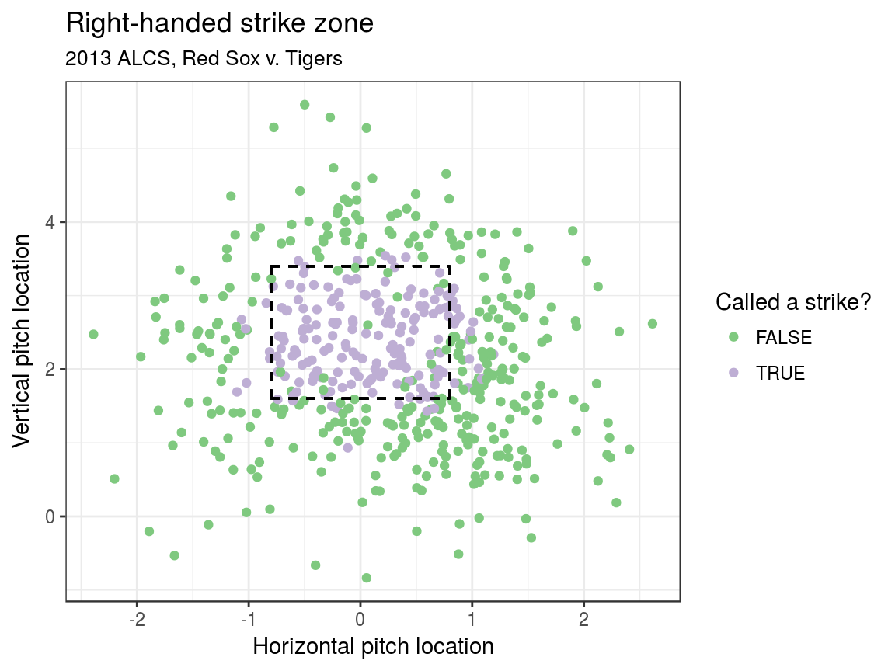
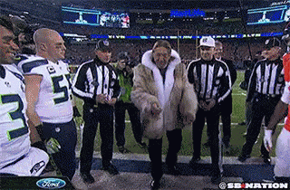
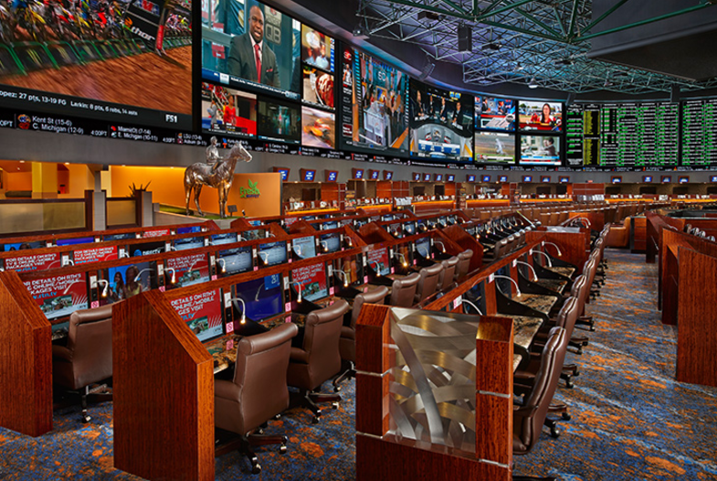
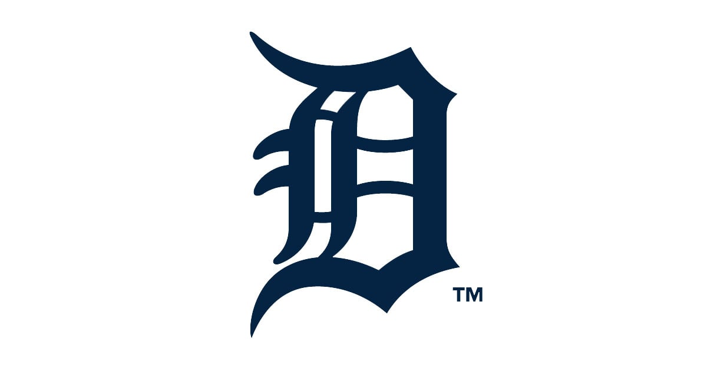
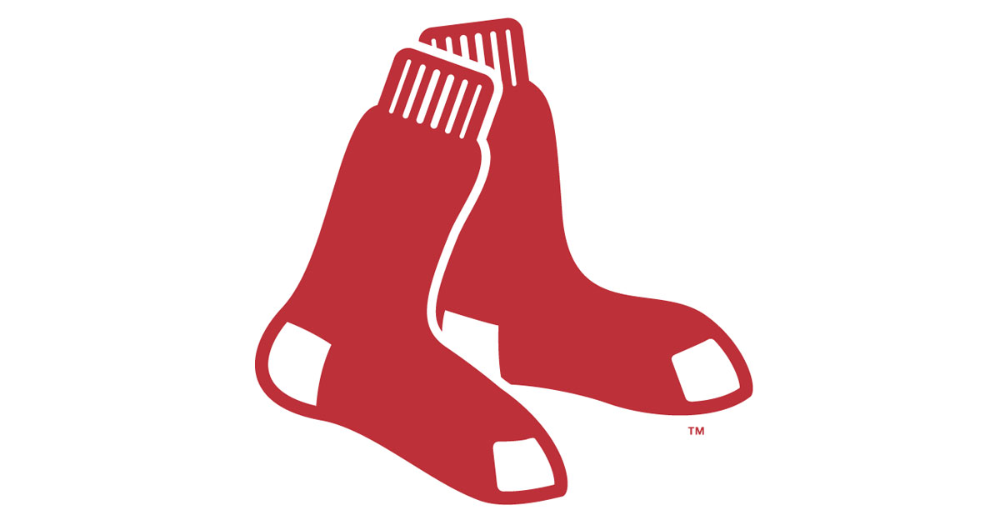
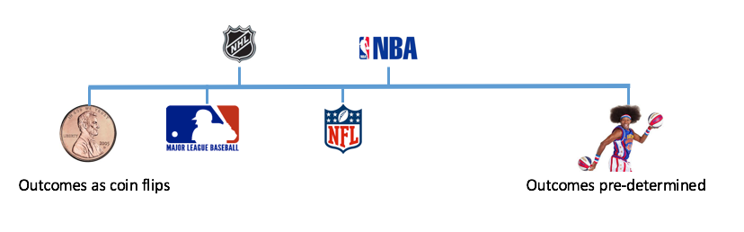
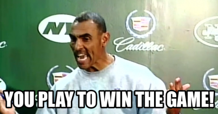
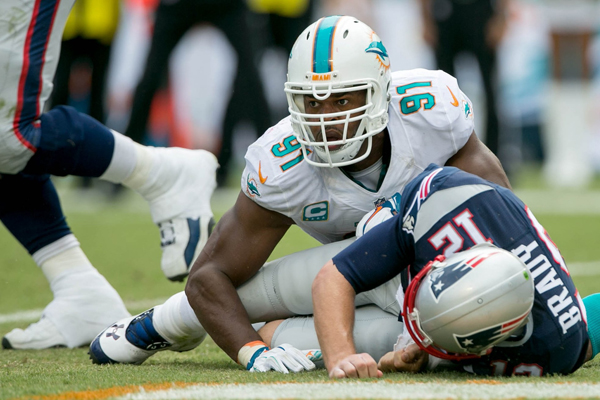
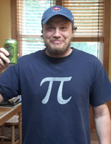

What we remember

What we forget

Pitches in the series

The truth is…
- About 80% of pitches taken at this location called a strike (using advanced modeling)
- Walk worth about 12% in win expectency (32% to 44%)
- Red Sox were lucky!
What we also forget

About that error…
- Jose Iglesias: 98.5% fielding percentage (Note: Statcast data unavailable)
- Error worth about 20% in win expectency over out at second (36% to 56%)
- Red Sox were lucky!
Summary
- Two huge swings in win probability that were outside the Red Sox control
- Red Sox were lucky!
Using statistics to assess luck in sports
- The best team does not always win. Sorry, Detroit
- How to untangle luck from skill?
- How often does the best team win in each sport? Luck —> parity
How to define parity
the state or condition of being equal
Google
What parity looks like

What parity does not look like

Parity checklist
- Equality at a fixed time
- Within season equality
- Between season equality
Challenges
- Problem 1: wins and losses alone insufficient (noisy)
- Problem 2: point differential non-generalizable
- Solution: if you can’t beat em, use their numbers in a statistical model

Moneylines
|  |
-127 |
0.559 |
0.548 |
|  |
+117 |
0.461 |
0.452 |
\[
p_i(\ell_i) = \begin{cases}
\frac{100}{100 + \ell_i} & \text{ if } \ell_i \geq 100 \\
\frac{|\ell_i|}{100 + |\ell_i|} & \text{ if } \ell_i \leq -100
\end{cases} \,.
\]
The model: definitions
- \(p_{(q,s,k)ij} =\) probability that team \(i\) will beat team \(j\) in season \(s\) during week \(k\) of sports league \(q\), for \(q \in \{MLB, NBA, NFL, NHL\}\).
- \(\alpha_{q_{0}}\) be the league-wide home advantage (HA) in \(q\)
- \(\alpha_{(q) i^{\star}}\) be the extra effect (+ or -) for team \(i\) when playing at home
- \(\theta_{(q,s,k) i}\) and \(\theta_{(q, s, k) j}\) be season-week team strength parameters
The model & assumptions
\[ E[\text{logit}(p_{(q,s,k) ij})] = \theta_{(q,s,k) i} - \theta_{(q, s, k) j} + \alpha_{q_0} + \alpha_{(q) i^{\star}} \]
Assumptions:
- \(\sum_{i=1}^{t_{q}} \theta_{(q,s,k)i} = 0\)
- \(E[\theta_{(i,q,s+1,1)}] = \gamma_{q, season} \theta_{(i, q,s,k)}\)
- \(E[\theta_{(i,q,s,k+1)}] = \gamma_{q, week} \theta_{(i, q,s,k)}\)
- \(\gamma_{q,week}\) and \(\gamma_{q,season}\) week/season level autogressive parameters
Fitting a cross-sport model
- Data
- 2006–2016 reg. season in MLB, NBA, NFL, NHL (Sports Insights)
- Priors
- Uniform (variance parameters) and Normal (team strength parameters)
- Software
rjags package in R statistical software
- Draws
- 20k iterations, 2k burn in, thin of 5
Unpredictability at a fixed point in time
How often does the best team win?

GMs need to predict the future

- Our team strengths are better at predicting future W-L
GMs need to strategize
- Patriots rest starters in 2015 against Dolphins
- Home advantage matters in 🏈 and 🏀

GMs need a longe-term plan
“They have to rethink their whole philosophy”
Mike Milbury on the 2016 Washington Capitals losing to Pittsburgh
- There’s an immense amount of luck involved in hockey. Rethinking your philosophy on a postseason series is ludicrous
Acknowledgements: Greg
